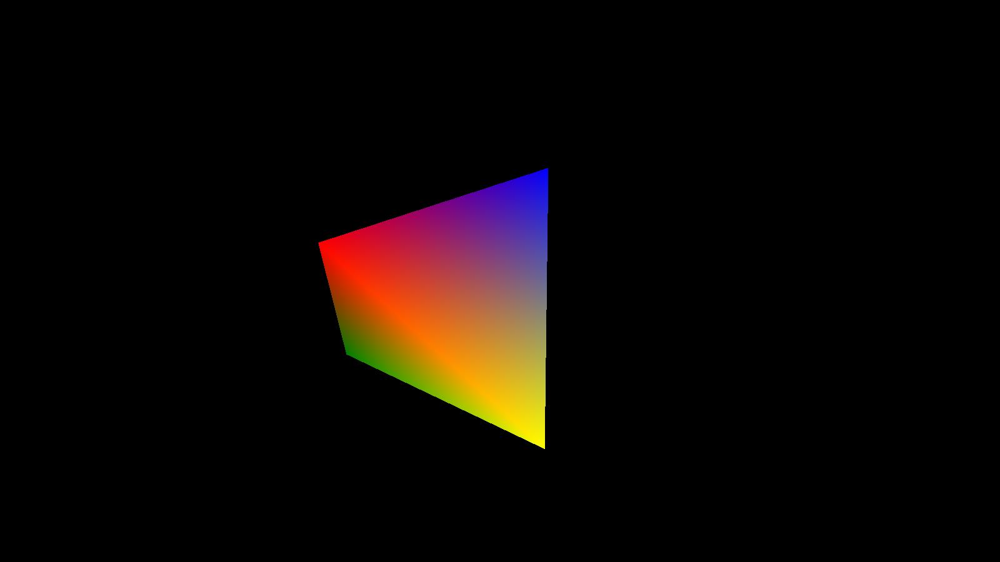

Week 1
Created an interactive MonoGame environment with a movable camera to fly around and capture raytraced images. The scene is rasterized for display.
Black-and-white triangle render using Barycentric coordinates
Implemented the first step suggested by the professor: placing a single triangle face and raycasting it.
- Produced a black-and-white render: white for intersections, black for no intersection.
- Intersection tests were done using Barycentric coordinates, which are also used to determine the color inside the triangle.

Colored triangle render using Barycentric coordinates
Extended the renderer to support full color rendering using the same Barycentric coordinates.
Intersection point P is computed using Barycentric coordinates:
P = b₀·v₀ + b₁·v₁ + b₂·v₂
with b₀ + b₁ + b₂ = 1 and bᵢ ≥ 0
P = b₀·v₀ + b₁·v₁ + b₂·v₂
with b₀ + b₁ + b₂ = 1 and bᵢ ≥ 0
Color interpolation is calculated as:
C = b₀·C₀ + b₁·C₁ + b₂·C₂
C = b₀·C₀ + b₁·C₁ + b₂·C₂
public static bool IntersectsFace(this Ray ray, (Vector3, Vector3, Vector3) face, out float b0, out float b1, out float b2, out float t)
{
var (p0, p1, p2) = face;
var e1 = p1 - p0;
var e2 = p2 - p0;
var s = ray.Position - p0;
b0 = b1 = b2 = t = 0;
var dCrossE2 = Vector3.Cross(ray.Direction, e2);
var sCrossE1 = Vector3.Cross(s, e1);
var denom = Vector3.Dot(dCrossE2, e1);
if (Math.Abs(denom) < 1e-5f)
return false;
var invDenom = 1.0f / denom;
t = Vector3.Dot(sCrossE1, e2) * invDenom;
b1 = Vector3.Dot(dCrossE2, s) * invDenom;
b2 = Vector3.Dot(sCrossE1, ray.Direction) * invDenom;
b0 = 1 - b1 - b2;
return t > 0 && b1 >= 0 && b2 >= 0 && (b1 + b2) <= 1;
}
color = b0 * v0.Color + b1 * v1.Color + b2 * v2.Color;

Raytraced tetrahedron with closest intersection detection
Started raytracing simple objects like a tetrahedron.
- Used the t-component to determine the closest intersection point.
Scene with dynamic lighting and shadow ray tracing
Added light sources and implemented shadow rays for realistic illumination.
- Objects now cast accurate shadows based on their position relative to the light.
- Integrated simple Lambertian shading for diffuse reflection.
- Improved visual depth and realism compared to previous renders.